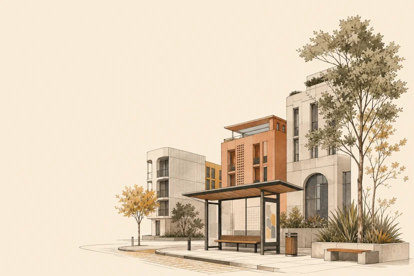

GIS / URBAN ANALYTICS / INDONESIA
Mapping decisions
into space.
I build evidence-led geospatial analysis for the systems cities depend on: access, food, land, and the changing urban fabric.
Explore selected work
01 / FEATURED CASE STUDIES
Two systems.
Two urgent questions.
Home is a short introduction to the practice. The complete five-study index lives in Work.
NETWORK ACCESS
Transit accessibility in DKI Jakarta
Who can actually reach the city?
Enter case study
FOOD SYSTEMS
Critical roads for rice in West Java
Which roads keep West Java’s rice moving?
Enter case study
02 / METHOD IN MOTION
A question finds
a spatial answer.
One original process connects the work: make a decision question, its evidence, and its limits legible.
- 01
Frame the planning question
Name the decision, place, and people the analysis needs to serve.
- 02
Assemble spatial evidence
Bring routes, land, facilities, observations, and their coverage into view.
- 03
Test method and uncertainty
Use a suitable spatial method and state what the evidence can—not cannot—support.
- 04
Make decision context legible
Translate the pattern, trade-off, and next question into a clear spatial story.
03 / ABOUT
I work across GIS, planning, and spatial research—making methods legible enough to inform a decision.
More about my practice04 / CONTACT